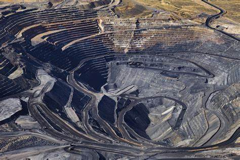
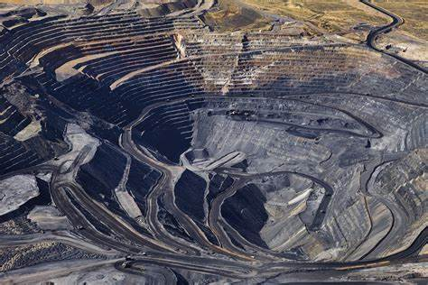
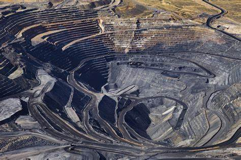

Mineral-Rich Landscapes
 

Explore the transformative impact of computer vision on automated ore sorting.
Mining provides essential materials like lithium, cobalt, and rare earth elements that power smartphones, electric vehicles, and renewable energy technologies.
The mining industry contributes billions to global economies, creating jobs and supporting local communities.
Modern mining focuses on reducing environmental impact through advanced technologies like automated sorting and waste reduction.
Mining supplies raw materials like iron, copper, and aluminum, which are critical for building roads, bridges, and cities.
